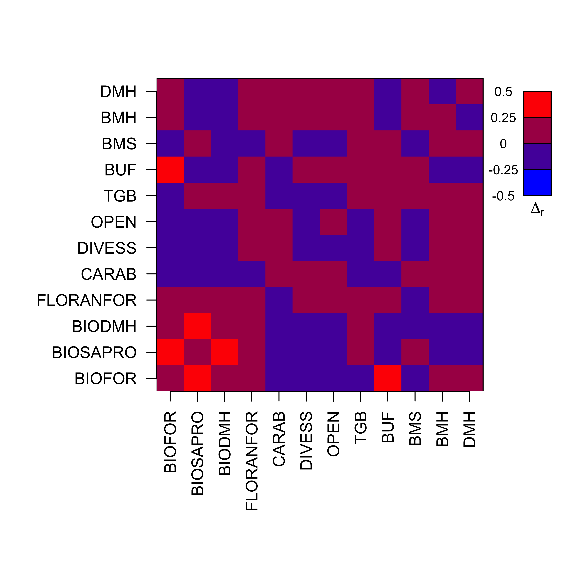

Les modèles à équations structurelles pour l’étude des écosystèmes et socio-écosystèmes
F. Laroche, J. Froidevaux, L. Larrieu et M. Goulard
Ce document constitue une présentation des codes et analyses associés au traitement de l’exemple présenté en section 3 du chapitre Les modèles à équations structurelles pour l’étude des écosystèmes et socio-écosystèmes de l’ouvrage Approches statistiques pour les variables cachées en écologie. Sa segmentation suit celle de la section correspondante du chapitre. On recommande aux utilisateurs une lecture du chapitre préalable, afin de comprendre la logique de la progression exposée ici.
Certaines étapes ci-dessous peuvent être longues en temps de calcul (jusqu’à 12h sur un PC portable \(2\) processeurs \(2.7\) GHz et \(16\) Go de RAM). Par conséquent, on fournit avec ce script une arborescence de fichiers .Rdata permettant de charger le résultat de certains blocs. Se référer aux adresses de fichiers précisées dans les blocs de code, et aux emplacements correspondants dans l’arborescence des fichiers joints.
On importe l’ensemble des fonctions utiles pour les analyses à venir.
source("code/functions_20200722.r")## This is lavaan 0.6-7## lavaan is BETA software! Please report any bugs.## Loading required package: carDataEtapes préliminaires
On commence par importer le jeu de données :
load("dat/dataIni.Rdata")On observe la moyenne de chaque variable dans chaque massif :
tabMean <- apply(dataIni[,-ncol(dataIni)],2,function(v){
return(c(
mean(as.numeric(v[dataIni$site!="Auberive"])),
mean(as.numeric(v[dataIni$site=="Auberive"]))
))
})
tabCI <- apply(dataIni[,-ncol(dataIni)],2,function(v){
return(c(
1.96*sd(
as.numeric(v[dataIni$site!="Auberive"])
)/sqrt(sum(dataIni$site!="Auberive")),
1.96*sd(
as.numeric(v[dataIni$site=="Auberive"])
)/sqrt(sum(dataIni$site=="Auberive"))
))
})
par(mar=c(8,4,4,1))
x <- barplot(tabMean,beside=TRUE,las=2,col=c(2,3))
arrows(
x0=x[1,],y0=tabMean[1,]-tabCI[1,],y1=tabMean[1,]+tabCI[1,],
code=3,angle=90,length=0.05
)
arrows(
x0=x[2,],y0=tabMean[2,]-tabCI[2,],y1=tabMean[2,]+tabCI[2,],
code=3,angle=90,length=0.05
)
legend(x[1,1],80,c("Fontainebleau","Auberive"),fill=c(2,3))
On constate que certaines variables diffèrent sensiblement entre les massifs. C’est un élément à garder à l’esprit lors de l’interprétation des résultats car tout effet “massif” dans les données aura tendance à être attribué à ces différences, même des effets potentiellement non liés (par exemple des effets biogéographiques sur la biodiversité). Pour contourner cette ambiguïté, on aurait besoin d’un plus grand nombre de massifs répartis de façon équilibrée dans la gamme de valeurs des différentes variables sans autocorrélation spatiale forte de ces valeurs. Le jeu de données de Larrioeu et coll. (2019) comporte un plus grand nombre de massifs, mais les variables de biodiversité mesurées diffèrent entre les massifs, ce qui contraindrait à considérer un nombre de taxons plus faibles dans l’analyse et nuirait au caractère illustratif de notre exemple.
Normalisation des variables
On applique une fonction de normalisation via une transformation puissance aux variables du jeu de données :
dataNorm <- apply(dataIni[,-ncol(dataIni)],2,function(w){
v <- w+1
normalize(v) #cf. script de fonctions
})On élimine les variables qui dévient significativement d’une loi normale selon un test de Kolmogorov-Smirnov :
indDev <- which(
apply(dataNorm,2,
function(v) ks.test(v,pnorm)$p.value
)<0.05
)
dataNorm <- dataNorm[,-indDev]
dataNorm <- as.data.frame(dataNorm)Remarque : on ignore ici le caractère approximatif d’un test de Kolmogorov-Smirnov sur des données comportant des ex-aequo.
On peut visualiser la matrice de corrélation entre les variables observées au sein du jeu de données, qui sert de base aux ajustements et tests des MES dans la suite :
matS <- cov(dataNorm)
diag(matS) <- diag(matS)-10^(-15)
par(mar=c(10,8,4,1))
image(
1:nrow(matS),
1:ncol(matS),
matS,
breaks=seq(-1,1,0.5),
col=rgb(seq(0,1,1/3),0,seq(1,0,-1/3)),
xaxt="n",yaxt="n",xlab="",ylab="",
xlim=c(0.5,nrow(matS)*1.3),bty="n"
)
###Aspects purement graphiques###
polygon(
c(0,nrow(matS),nrow(matS),0)+0.5,
c(0,0,ncol(matS),ncol(matS))+0.5,
border=1
)
axis(
1,
at=1:nrow(matS),
labels=rownames(matS),
las=2)
axis(
2,
at=1:ncol(matS),
labels=colnames(matS),
las=1
)
nul <- sapply(1:4,function(i){
polygon(nrow(matS)+3+c(0,1,1,0),
ncol(matS)-(i-1)+c(-1,-1,0,0),
border=1,col=rgb(seq(0,1,1/3),0,seq(1,0,-1/3))[5-i]
)
})
nul <- sapply(1:5,function(i){
text(nrow(matS)+1.5,ncol(matS)-(i-1),seq(-1,1,0.5)[6-i],cex=0.8)
})
text(nrow(matS)+3.5,ncol(matS)-4.5,expression(r),font=2)Construction d’un MES a priori
On propose un MES a priori sur la base des bouquets de variables observées suivants :
lisBlocBiodiv <- list(
BIOFOR = c("rs.florafor","rs.oisoForNCav","rs.bryo"),
BIOSAPRO = c("rs.colsaproflor","rs.colsaproNFlor","rs.myco.d","rs.myco.ND"),
BIODMH = c("rs.chirocav","rs.oisocav"),
BIONFOR = c("rs.carab","rs.floraNFor")
)
lisBlocCov <- list(
DIVESS = "nb.ess",
OPEN = "open",
TGB = "nb.tgb",
BUF= c("bufPast","bufPres"),
BM = c("nb.bms","nb.chand","nb.bmh"),
DMH = c("nb.cav","nb.unbark")
)
lisBloc <- c(lisBlocBiodiv,lisBlocCov)On propose un modèle relationnel a priori entre les composantes exposées ci-dessus:
lisReg0 <- list(
"BIOFOR ~ DIVESS + OPEN + BUF",
"BIOSAPRO ~ DIVESS + OPEN + BUF + BM + TGB",
"BIODMH ~ DMH + BUF",
"BIONFOR ~ BUF + OPEN",
"BM ~ TGB",
"DMH ~ TGB"
)On peut visualiser dans une fenêtre HTML le MES obtenu à partir du modèle de mesure et du modèle relationnel ci-dessus (cf. Figure 2 du chapitre) :
script0 <- SEMGen(lisBloc,lisReg0) #cf script de fonctions
semFit0 <- lavaan(script0,data= dataNorm,do.fit=FALSE)
lavaanPlot(model=semFit0)Evaluation du modèle de mesure
On souhaite tester et affiner le modèle de mesure du MES a priori présenté en section précédente par une analyse factorielle confirmatoire (Etape 1 dans la Figure 3 du chapitre).
##Construction et ajustement du modèle d’analyse confirmatoire
On commence par construire le script du MES associé à l’analyse confirmatoire dans la syntaxe du package lavaan :
scriptCFA <- SEMGen(lisBloc,list()) #cf script de fonctionsPuis on utilise lavaan pour ajuster le modèle aux observations :
fitCFA0 <- lavaan(scriptCFA,data= dataNorm)lavInspect(fitCFA0,"post.check")## Warning in lav_object_post_check(object): lavaan WARNING: covariance matrix of latent variables
## is not positive definite;
## use lavInspect(fit, "cov.lv") to investigate.## [1] FALSEOn note la présence d’un warning qui indique que la matrice de variance-covariance (matCovLV) entre les variables latentes n’est pas définie positive, ce qui nécessite une correction. On projette la matrice de variance-covariance obtenue sur l’espace des matrices symétriques définies positives:
matCovLV <- lavInspect(fitCFA0,"cov.lv")
D <- diag(eigen(matCovLV)$values)
indNeg <- which(diag(D)<0)
DPos <- D
diag(DPos)[indNeg] <- 10^(-5)
P <- eigen(matCovLV)$vectors
matCovLVPos <- P%*%DPos%*%t(P)
rownames(matCovLVPos) <- rownames(matCovLV)
colnames(matCovLVPos) <- colnames(matCovLV)On réajuste ensuite les paramètres du modèle de mesure conditionnellement à cette projection :
scrUpdate <- SEMGen(lisBloc,list(),force=matCovLVPos)fitCFA0Pos <- lavaan(scrUpdate,data= dataNorm)Test d’adéquation du modèle d’analyse factorielle confirmatoire par bootstrap paramétrique
On relève les statistiques \(-2\Delta_{LL}\) et le \(RMSEA\) du modèle d’analyse confirmatoire :
vFit <- fitmeasures(fitCFA0Pos)
indFit <- match(c("chisq","rmsea"),names(vFit))
vFit[indFit] #-2DeltaLL et RMSEA du modèle d'analyse confirmatoire## chisq rmsea
## 273.54204147 0.08326199On procède maintenant à un bootstrap paramétrique pour obtenir une distribution rééchantillonnée de ces deux statistiques sous l’hypothèse nulle que le modèle d’analyse confirmatoire suffit à décrire la structure du jeu de données.
matCovEst <- lavInspect(fitCFA0Pos,"sigma.hat")
nObs <- lavInspect(fitCFA0Pos,"nTotal")
B <- 100 Comme chaque ré-échantillonnage est long à traiter, on recommande de commencer par tester avec un petit nombre de répétitions \(B\). Ensuite il faudrait idéalement atteindre \(B=500\) (ici, on s’est limité à \(B=100\)). Pour la suite, on recommande de créer un sous répertoire de root (ici dénommé Etape1/Boot0) où les modèles issus des rééchantillonnages sont stockés. On montre ci-dessous une approche par une simple boucle. On recommande en pratique d’avoir recours à de la parallélisation pour gagner en temps de calcul.
for(re in 1:B){
bootSamp <- rmnorm(n=nObs,varcov=matCovEst)
fitCFA0Boot <- lavaan(scriptCFA,data=bootSamp)
matCovLVBoot <- lavInspect(fitCFA0Boot,"cov.lv")
eig <- eigen(matCovLVBoot)
if(min(eig$values)<0){
D <- diag(eig$values)
indNeg <- which(diag(D)<0)
DPos <- D
diag(DPos)[indNeg] <- 10^(-5)
P <- eig$vectors
projMatCovLVBoot <- P%*%DPos%*%t(P)
rownames(projMatCovLVBoot) <- rownames(matCovLVBoot)
colnames(projMatCovLVBoot) <- colnames(matCovLVBoot)
scrUpdateBoot <- SEMGen(lisBloc,list(),force=projMatCovLVBoot)
fitCFA0Boot <- lavaan(scrUpdateBoot,data=bootSamp)
}
save(
fitCFA0Boot,
file=paste(
root,
"dat/Etape1/Boot0/fitCFA0Boot_",
re,
".Rdata",
sep=""
)
)
})Une fois les modèles ajustés sur les échantillons simulés obtenus, on peut générer une distribution nulle des statistiques de test étudiées:
indConv0 <- which(sapply(1:B,function(re){
load(paste("dat/Etape1/Boot0/fitCFA0Boot_",re,".Rdata",sep=""))
return(lavInspect(fitCFA0Boot,"converged"))
})) #Récupération des ré-échantillonnages où l'estimation a convergé
tabBootFit <- sapply(indConv0,function(re){
load(paste("dat/Etape1/Boot0/fitCFA0Boot_",re,".Rdata",sep=""))
return(fitmeasures(fitCFA0Boot))
})
par(mfrow=c(1,2))
hist(tabBootFit[indFit[1],],xlab=expression(-2*Delta[LL]),main="")
hist(tabBootFit[indFit[2],],xlab="RMSEA",main="")On peut alors déterminer le quantile des statistiques observées sur les vraies observations dans leurs distributions nulles respectives.
tabQHat <- sapply(indFit,function(i) mean(tabBootFit[i,]<vFit[i]))
tabQHat## [1] 0.83 0.81et on peut déterminer un seuil théorique au dessus duquel on peut décréter que les observations donnent une statistique significativement plus grande que l’attendu sous l’hypothèse nulle avec un niveau de confiance à \(5\)% :
thres <- 1/length(indConv0)*qbinom(0.05,length(indConv0),0.95)
thres## [1] 0.91Comme les quantiles observés sont inférieurs à ce seuil, on conclut que le modèle d’analyse confirmatoire fondé sur le modèle de mesure a priori n’est pas rejeté.
##Examen du modèle de mesure estimé et raffinements
On peut visualiser le modèle de mesure estimé :
matLoad <- lavInspect(fitCFA0Pos,"est")$lambda
vLoad <- as.vector(matLoad)
vNbLoad <- apply(matLoad,2,function(v) sum(v>0))
vNamesOV <- unlist(apply(matLoad,2,function(v) rownames(matLoad)[which(v>0)]))
vLoad <- vLoad[vLoad>0]
vCol <- unlist(lapply(1:length(vNbLoad),function(i) rep(i,vNbLoad[i])))
off <- 0.1
cx <- 1.4
par(mar=c(5,10,4,1))
x <- barplot(
vLoad,col=vCol,
names.arg="",las=1,ylab="",xlim=c(0,2),xaxt="n",
horiz=TRUE,offset=off
)
nul <- sapply(1:length(vNamesOV),function(i){
text(vLoad[i]+0.05+off,x[i],vNamesOV[i],pos=4,cex=cx)
})
axis(1,at=seq(0,1,0.2)+off,labels=seq(0,1,0.2),cex.axis=cx/2)
lisIndLat <- apply(matLoad,2,function(v) which(v>0))
nul <- sapply(1:length(lisIndLat),function(i){
lines(c(0,1)+off,rep(x[cumsum(vNbLoad)[i]]+(x[2]-x[1])/2,2),lty="dashed")
})
nul <- sapply(1:length(lisIndLat),function(i){
xLab <- mean(x[lisIndLat[[i]]])
# yLab <- 1.1+0.1*(i%%2)
# text(yLab,xLab,colnames(matLoad)[i],col=i)
mtext(colnames(matLoad)[i],2,las=2,at=xLab,col=i,adj=1,font=2,cex=cx)
})
mtext("Contribution de la variable latente",1,at=0.5+off,padj=4,cex=cx)On constate que les variables observées nb.bmh et rs.carab ne sont pas captées par le modèle de mesure. On procède donc à un raffinement du modèle de mesure où l’on isole ces variables comme des composantes à part :
lisBlocBiodiv1 <- list(
BIOFOR = c("rs.florafor","rs.oisoForNCav","rs.bryo"),
BIOSAPRO = c("rs.colsaproflor","rs.colsaproNFlor","rs.myco.d","rs.myco.ND"),
BIODMH = c("rs.chirocav","rs.oisocav"),
FLORANFOR = "rs.floraNFor",
CARAB = "rs.carab"
)
lisBlocCov1 <- list(
DIVESS = "nb.ess",
OPEN = "open",
TGB = "nb.tgb",
BUF= c("bufPast","bufPres"),
BMS = c("nb.bms","nb.chand"),
BMH = "nb.bmh",
DMH = c("nb.cav","nb.unbark")
)
lisBloc1 <- c(lisBlocBiodiv1,lisBlocCov1)##Test d’adéquation du modèle de mesure raffiné
On ajuste sur les données le modèle d’analyse confirmatoire associé au modèle de mesure raffiné (en contrôlant comme précédemment le caractère défini positif de la matrice de variance-covariance des variables latentes obtenue) :
scriptCFA1 <- SEMGen(lisBloc1,list()) fitCFA1 <- lavaan(scriptCFA1,data=dataNorm) matCovLV <- lavInspect(fitCFA1,"cov.lv")
D <- diag(eigen(matCovLV)$values)
indNeg <- which(diag(D)<0)
DPos <- D
diag(DPos)[indNeg] <- 10^(-5)
P <- eigen(matCovLV)$vectors
matCovLVPos <- P%*%DPos%*%t(P)
rownames(matCovLVPos) <- rownames(matCovLV)
colnames(matCovLVPos) <- colnames(matCovLV)
scrUpdate <- SEMGen(lisBloc1,list(),force=matCovLVPos) fitCFA1Pos <- lavaan(scrUpdate,data= dataNorm)On relève les statistiques \(-2\Delta_{LL}\) et le \(RMSEA\) du modèle d’analyse confirmatoire obtenu :
vFit <- fitmeasures(fitCFA1Pos)
indFit <- match(c("chisq","rmsea"),names(vFit))
vFit[indFit] #-2DeltaLL et RMSEA du modèle d'analyse confirmatoire## chisq rmsea
## 221.091284 0.023977On effectue un test d’adéquation du modèle d’analyse confirmatoire associé à ce modèle de mesure raffiné par ré-échantillonnage paramétrique.
B <- 100
matCovEst <- lavInspect(fitCFA1Pos,"sigma.hat")
nObs <- lavInspect(fitCFA1Pos,"nTotal") Ici on montre une approche avec parallélisation locale via le package parallel.
cl <- makeCluster(4)
clusterExport(cl,c("nObs","matCovEst","scriptCFA1","lisBloc1","root"))
lisBootCFA <- parLapply(cl,1:B,function(re){
source("code/functions_20200722.r")
bootSamp <- rmnorm(n=nObs,varcov=matCovEst)
fitCFA1Boot <- lavaan(scriptCFA1,data=bootSamp)
matCovLVBoot <- lavInspect(fitCFA1Boot,"cov.lv")
eig <- eigen(matCovLVBoot)
if(min(eig$values)<0){
D <- diag(eig$values)
indNeg <- which(diag(D)<0)
DPos <- D
diag(DPos)[indNeg] <- 10^(-5)
P <- eig$vectors
projMatCovLVBoot <- P%*%DPos%*%t(P)
rownames(projMatCovLVBoot) <- rownames(matCovLVBoot)
colnames(projMatCovLVBoot) <- colnames(matCovLVBoot)
scrUpdateBoot <- SEMGen(lisBloc1,list(),force=projMatCovLVBoot)
fitCFA1Boot <- lavaan(scrUpdateBoot,data=bootSamp)
}
save(
fitCFA1Boot,
file=paste("dat/Etape1/Boot1/fitCFA1Boot_",re,".Rdata",sep="")
)
return(NULL)
})
stopCluster(cl) Après ajustement du modèle d’analyse confirmatoire sur les échantillons simulés, on génère une distribution nulle des statistiques de test étudiées:
indConv1 <- which(sapply(1:B,function(re){
load(paste("dat/Etape1/Boot1/fitCFA1Boot_",re,".Rdata",sep=""))
return(lavInspect(fitCFA1Boot,"converged"))
}))
tabBootFit <- sapply(indConv1,function(re){
load(paste("dat/Etape1/Boot1/fitCFA1Boot_",re,".Rdata",sep=""))
return(fitmeasures(fitCFA1Boot))
})
par(mfrow=c(1,2))
hist(tabBootFit[indFit[1],],xlab=expression(-2*Delta[LL]),main="")
hist(tabBootFit[indFit[2],],xlab="RMSEA",main="")
On peut alors déterminer le quantile des statistiques observées sur les vraies observations dans leurs distributions nulles respectives.
tabQHat <- sapply(indFit,function(i) mean(tabBootFit[i,]<vFit[i]))
tabQHat## [1] 0.58 0.58et on peut déterminer un seuil théorique au dessus duquel on peut décréter que les observations donnent une statistique significativement plus grande que l’attendu sous l’hypothèse nulle avec un niveau de confiance à \(5\)% :
thres <- 1/length(indConv1)*qbinom(0.05,length(indConv1),0.95)
thres## [1] 0.91On en conclut que le modèle d’analyse confirmatoire fondé sur le modèle de mesure raffiné n’est pas rejeté. On peut visualiser le modèle de mesure estimé :
matLoad <- lavInspect(fitCFA1Pos,"est")$lambda
vLoad <- as.vector(matLoad)
vNbLoad <- apply(matLoad,2,function(v) sum(v>0))
vNamesOV <- unlist(apply(matLoad,2,function(v) rownames(matLoad)[which(v>0)]))
vLoad <- vLoad[vLoad>0]
vCol <- unlist(lapply(1:length(vNbLoad),function(i) rep(i,vNbLoad[i])))
off <- 0.1
cx <- 1.4
par(mar=c(5,10,4,1))
x <- barplot(
vLoad,col=vCol,names.arg="",las=1,
ylab="",xlim=c(0,2),xaxt="n",horiz=TRUE,offset=off
)
nul <- sapply(
1:length(vNamesOV),
function(i) text(vLoad[i]+0.05+off,x[i],vNamesOV[i],pos=4,cex=cx)
)
axis(1,at=seq(0,1,0.2)+off,labels=seq(0,1,0.2),cex.axis=cx)
lisIndLat <- apply(matLoad,2,function(v) which(v>0))
nul <- sapply(1:length(lisIndLat),function(i){
lines(c(0,1)+off,rep(x[cumsum(vNbLoad)[i]]+(x[2]-x[1])/2,2),lty="dashed")
})
nul <- sapply(1:length(lisIndLat),function(i){
xLab <- mean(x[lisIndLat[[i]]])
# yLab <- 1.1+0.1*(i%%2)
# text(yLab,xLab,colnames(matLoad)[i],col=i)
mtext(colnames(matLoad)[i],2,las=2,at=xLab,col=i,adj=1,font=2,cex=cx)
})
mtext("Contribution de la variable latente",1,at=0.5+off,padj=4,cex=cx)On constate qu’il n’y a plus de variable observées à non associées à des composantes sous-jacentes dans le modèle de mesure, on conserve ce modèle de mesure dans la suite.
Comme évaluation complémentaire de l’ajustement du modèle d’analyse confirmatoire, on peut examiner visuellement l’écart entre la matrice de corrélation des variables observées qu’il prédit, et la matrice de corrélation effectivement observée dans le jeu de donnée.
On commence par extraire la matrice de corrélation prédite par le modèle :
matCovObsCFA <- lavInspect(fitCFA1Pos,"Sigma.hat")On calcule ensuite une différence coefficient par coefficient avec la matrice de coorrélation observée dans les données :
ordCFA <- match(rownames(matCovObsCFA),rownames(matS))
matDeltaCov<- matS[ordCFA,ordCFA]-matCovObsCFAOn peut alors visualiser sur quelles relations le modèle relationnel du MES diffère du modèle d’analyse confirmatoire, et donc dégrade sa qualité d’ajustement :
par(mar=c(10,8,4,1))
image(
1:nrow(matDeltaCov),
1:ncol(matDeltaCov),
matDeltaCov,
breaks=seq(-0.6,0.6,0.3),
col=rgb(seq(0,1,1/3),0,seq(1,0,-1/3)),
xaxt="n",yaxt="n",xlab="",ylab="",
xlim=c(0.5,nrow(matDeltaCov)*1.3),bty="n"
)
###Aspects purement graphiques###
polygon(
c(0,nrow(matDeltaCov),nrow(matDeltaCov),0)+0.5,
c(0,0,ncol(matDeltaCov),ncol(matDeltaCov))+0.5,
border=1
)
axis(
1,
at=1:nrow(matDeltaCov),
labels=rownames(matDeltaCov),
las=2)
axis(
2,
at=1:ncol(matDeltaCov),
labels=colnames(matDeltaCov),
las=1
)
nul <- sapply(1:4,function(i){
polygon(nrow(matDeltaCov)+3+c(0,1,1,0),
ncol(matDeltaCov)-(i-1)+c(-1,-1,0,0),
border=1,col=rgb(seq(0,1,1/3),0,seq(1,0,-1/3))[5-i]
)
})
nul <- sapply(1:5,function(i){
text(
nrow(matDeltaCov)+ 1.5,
ncol(matDeltaCov)-(i-1),
seq(-0.6,0.6,0.3)[6-i],
cex=0.8
)
})
text(
nrow(matDeltaCov)+3.5,
ncol(matDeltaCov)-4.5,
expression(Delta[r]),
font=2
)#Evaluation du modèle relationnel
Cette section traite du test 2 de la Figure 3 du chapitre, visant à évaluer la qualité du modèle relationnel du MES.
On part du modèle de mesure raffiné obtenu ci-dessus. On propose ajuste le modèle relationnel a priori (cf. Etapes préliminaires et Figure 2 du chapitre) pour s’adapter aux nouvelles composantes :
lisReg <- list(
"BIOFOR ~ DIVESS + OPEN + BUF",
"BIOSAPRO ~ DIVESS + OPEN + BUF + BMS + BMH + TGB",
"BIODMH ~ DMH + BUF",
"FLORANFOR ~ BUF + OPEN",
"CARAB ~ BUF + OPEN",
"BMH ~ TGB",
"DMH ~ TGB"
)Pour lequel on génère un script compatible avec la syntaxe du package lavaan.
semScript <- SEMGen(
lisBloc1,lisReg,record=TRUE,
root="dat/Etape2/",
id="test"
)Une version texte du script a été sauvegardée dans le sous-répertoire “Etape2/” de “root” pour consultation externe. On peut visualiser le MES global ainsi obtenu dans une fenêtre HTML (cf. Figure 4 du chapitre) :
semFit <- lavaan(semScript,data= dataNorm,do.fit=FALSE)
lavaanPlot(model=semFit)On ajuste ensuite ce modèle avec le package lavaan :
semFit <- lavaan(semScript,data= dataNorm)##Visualisation des effets au sein du modèle relationnel a priori et ajustements théoriques
On recense dans la figure suivante les effets estimés dans le modèle relationnel :
matB <- lavInspect(semFit,"coef")$beta
vecB <- as.vector(matB)
names(vecB) <- paste(
rep(colnames(matB),each=nrow(matB)),
" -> ",
rep(rownames(matB),ncol(matB)),
sep=""
)
indBet <- which(abs(vecB)>0)
vCol <- rep("grey",length(indBet))
vCol[c(8,9,15)] <- "red"
par(mar=c(10,8,4,1))
x <- barplot(
vecB[indBet],
las=2,ylim=c(-2,2),col=vCol,
ylab=expression(hat(beta)),cex.lab=1.5
)On a indiqué en rouge les effets de sens contraire aux attendus théoriques. La présence de ces effets contre-intuitifs suggèrent qu’il existe des corrélations entre ces variables de nature non-causales qu’il faudrait traiter en introduisant des termes de corrélation libre (de type \(\gamma\)). En pratique, on retire ces relations contre-intuitive du modèle et on replace les variables expliquées comme des variables exogènes du modèle.
lisReg2 <- list(
"BIOFOR ~ DIVESS + OPEN + BUF",
"BIODMH ~ DMH + BUF",
"FLORANFOR ~ BUF + OPEN",
"CARAB ~ BUF + OPEN"
)
semScript2 <- SEMGen(lisBloc1,lisReg2)semFit2 <- lavaan(semScript2,data= dataNorm,do.fit=FALSE)
lavaanPlot(model=semFit2)semFit2 <- lavaan(semScript2,data= dataNorm)matCovLV <- lavInspect(semFit2,"cov.lv")
indRem <- match(c("BIOFOR","BIODMH","FLORANFOR","CARAB"),rownames(matCovLV))
matCovLV <- matCovLV[-indRem,-indRem]
D <- diag(eigen(matCovLV)$values)
indNeg <- which(diag(D)<0)
DPos <- D
diag(DPos)[indNeg] <- 10^(-5)
P <- eigen(matCovLV)$vectors
matCovLVPos <- P%*%DPos%*%t(P)
rownames(matCovLVPos) <- rownames(matCovLV)
colnames(matCovLVPos) <- colnames(matCovLV)
scrUpdate2 <- SEMGen(lisBloc1,lisReg2,force=matCovLVPos)semFit2Pos <- lavaan(scrUpdate2,data=dataNorm,start=semFit2)##Test d’adéquation du modèle ajusté aux données
On compare le modèle MES fondé sur le modèle relationnel ci-dessus au modèle d’analyse confirmatoire sélectionné dans la section précédente (qui contient toutes les relations possibles entre les composantes). On relève les statistiques \(-2\Delta_{LL}\) du MES fondé sur le modèle relationnel :
vFit <- fitmeasures(semFit2Pos)
mDLL_1 <- vFit[match("chisq",names(vFit))]
mDLL_1## chisq
## 268.8651et celles du modèle d’analyse confirmatoire fondé sur le modèle de mesure seul :
vFit_CFA <- fitmeasures(fitCFA1Pos)
mDLL_2 <- vFit_CFA[match("chisq",names(vFit_CFA))]
mDLL_2## chisq
## 221.0913On peut alors calculer la statistique du rapport de vraisemblance entre les deux modèles :
mDLL_12 <- mDLL_1 - mDLL_2
mDLL_12## chisq
## 47.77377Pour déterminer si cette statistique est supérieure à l’attendu sous l’hypothèse nulle que le modèle relationnel considéré ici est le bon, on a recours à un test de modèle emboîté par ré-échantillonnage paramétrique. On simule des donné avec le MES fondé sur le modèle relationnel à l’étude, et on réajuste le même MES ainsi que le modèle d’analyse confirmatoire sur ces données simulées :
matCovEst <- lavInspect(semFit2Pos,"sigma.hat")
nObs <- lavInspect(semFit2Pos,"nTotal")
B <- 100 cl <- makeCluster(4)
clusterExport(cl,c("nObs","matCovEst","semScript2","root","lisReg2","lisBloc1"))
parLapply(cl,(1:B),function(re){
source("code/functions_20200722.r")
bootSamp <- rmnorm(n=nObs,varcov=matCovEst)
semFitBoot2 <- lavaan(semScript2,data=bootSamp)
save(
semFitBoot2,
file=paste("dat/Etape2/Boot2/semFitBoot2_",re,".Rdata",sep="")
)
if(!lavInspect(semFitBoot2,"post.check")){
matCovLV <- lavInspect(semFitBoot2,"cov.lv")
indRem <- match(c("BIOFOR","BIODMH","FLORANFOR","CARAB"),rownames(matCovLV))
matCovLV <- matCovLV[-indRem,-indRem]
D <- diag(eigen(matCovLV)$values)
indNeg <- which(diag(D)<0)
DPos <- D
diag(DPos)[indNeg] <- 10^(-5)
P <- eigen(matCovLV)$vectors
matCovLVPos <- P%*%DPos%*%t(P)
rownames(matCovLVPos) <- rownames(matCovLV)
colnames(matCovLVPos) <- colnames(matCovLV)
scrUpdateBoot2 <- SEMGen(lisBloc1,lisReg2,force=matCovLVPos)
semFitBoot2Pos <- lavaan(scrUpdateBoot2,data=bootSamp)
} else{
semFitBoot2Pos <- semFitBoot2
}
save(
semFitBoot2Pos,
file=paste("dat/Etape2/Boot2Pos/semFitBoot2Pos_",re,".Rdata",sep="")
)
return(NULL)
})
stopCluster(cl)
cl <- makeCluster(4)
clusterExport(cl,c("nObs","root","scriptCFA1","lisBloc1"))
parLapply(cl,1:B,function(re){
source("functions_20200722.r")
load(paste("dat/Etape2/Boot2Pos/semFitBoot2Pos_",re,".Rdata",sep=""))
bootSamp <- lavInspect(semFitBoot2Pos,"data")
semFitCFABoot2 <- lavaan(scriptCFA1,data=bootSamp)
save(
semFitCFABoot2,
file=paste("dat/Etape2/CFABoot2/semFitCFABoot2_",re,".Rdata",sep="")
)
if(!lavInspect(semFitCFABoot2,"post.check")){
matCovLV <- lavInspect(semFitCFABoot2,"cov.lv")
D <- diag(eigen(matCovLV)$values)
indNeg <- which(diag(D)<0)
DPos <- D
diag(DPos)[indNeg] <- 10^(-5)
P <- eigen(matCovLV)$vectors
matCovLVPos <- P%*%DPos%*%t(P)
rownames(matCovLVPos) <- rownames(matCovLV)
colnames(matCovLVPos) <- colnames(matCovLV)
scrUpdateCFABoot2 <- SEMGen(lisBloc1,list(),force=matCovLVPos)
semFitCFABoot2Pos <- lavaan(scrUpdateCFABoot2,data=bootSamp)
} else{
semFitCFABoot2Pos <- semFitCFABoot2
}
save(
semFitCFABoot2Pos,
file=paste("dat/Etape2/CFABoot2Pos/semFitCFABoot2Pos_",re,".Rdata",
sep="")
)
return(NULL)
})
stopCluster(cl)Une fois ces modèles ajustés, on peut générer une distribution du rapport de vraisemblance entre les deux modèles sous l’hypothèse nulle :
indConvCFA_2Pos <- which(sapply(1:B,function(re){
load(paste(
"dat/Etape2/CFABoot2Pos/semFitCFABoot2Pos_",
re,
".Rdata",
sep=""
))
load(paste("dat/Etape2/Boot2Pos/semFitBoot2Pos_",re,".Rdata",sep=""))
conv <- lavInspect(semFitCFABoot2Pos,"converged")
conv2 <- lavInspect(semFitBoot2Pos,"converged")
return(conv * conv2 ==1)
}))
vecBootMDLL_12 <- sapply(indConvCFA_2Pos,function(re){
load(paste(
"dat/Etape2/CFABoot2Pos/semFitCFABoot2Pos_",
re,
".Rdata",
sep=""
))
load(paste("dat/Etape2/Boot2Pos/semFitBoot2Pos_",re,".Rdata",sep=""))
vFit_2 <- fitmeasures(semFitCFABoot2Pos)
vFit_1 <- fitmeasures(semFitBoot2Pos)
mLL_2 <- vFit_2[match("chisq",names(vFit_2))]
mLL_1 <- vFit_1[match("chisq",names(vFit_1))]
return(mLL_1 - mLL_2)
})
hist(
vecBootMDLL_12,
xlab=expression((-2*Delta[LL]^1)-(-2*Delta[LL]^2)),
main=""
)
abline(v=mDLL_12,col="red")Notons ici que les valeurs de log-rapport de vraisemblance ré-échantillonnées sont parfois négatives, ce qui est en théorie impossible. On attribue ce phénomène à une imprécision de l’optimisation numérique sous contrainte. On pourrait évaluer dans quelle mesure une augmentation du nombre d’itérations de l’optimiseur ou un changement d’initialisation résorberaient ce problème, mais cette exploration dépasse le périmètre de l’exposé.
On peut alors déterminer le quantile du rapport de vraisemblance observé sur les vraies observations dans la distribution nulle obtenue par ré-échantillonnage :
qHat <- mean(vecBootMDLL_12<mDLL_12)
qHat ## [1] 0.9791667et on peut déterminer un seuil théorique au dessus duquel on peut décréter que les observations donnent une statistique significativement plus grande que l’attendu sous l’hypothèse nulle avec un niveau de confiance à \(5\)% :
thres <- 1/length(indConvCFA_2Pos)*qbinom(0.05,length(indConvCFA_2Pos),0.95)
thres## [1] 0.90625On en conclut que le MES fondé sur le modèle relationnel étudié est significativement moins bon que le modèle d’analyse confirmatoire ce qui suggère qu’il manque des relations dans le modèle relationnel.
##A la recherche des relations manquantes dans le modèle relationnel
Pour identifier, parmi les relations entre variables latentes prédites par le modèle d’analyse confirmatoire, celles qui sont mal captées par le modèle relationnel considéré, on compare visuellement les matrices de corrélation entre variables latentes prédites par les deux modèles.
On commence par extraire la matrice de corrélation entre les variables latentes prédite par le MES à l’étude :
matCovLat2 <- lavInspect(semFit2Pos,"cov.lv")ainsi que celle du modèle d’analyse confirmatoire :
matCovLatCFA <- lavInspect(fitCFA1Pos,"cov.lv")et on calcule une différence coefficients par coefficients :
matDeltaCovLatCFA <- matCovLatCFA-matCovLat2On peut alors visualiser sur quelles relations le modèle relationnel du MES diffère su modèle d’analyse confirmatoire, et donc dégrade sa qualité d’ajustement :
par(mar=c(10,8,4,1))
image(
1:nrow(matDeltaCovLatCFA),
1:ncol(matDeltaCovLatCFA),
matDeltaCovLatCFA,
breaks=seq(-0.5,0.5,0.25),
col=rgb(seq(0,1,1/3),0,seq(1,0,-1/3)),
xaxt="n",yaxt="n",xlab="",ylab="",
xlim=c(0.5,nrow(matDeltaCovLatCFA)*1.3),bty="n"
)
###Aspects purement graphiques###
polygon(
c(0,nrow(matDeltaCovLatCFA),nrow(matDeltaCovLatCFA),0)+0.5,
c(0,0,ncol(matDeltaCovLatCFA),ncol(matDeltaCovLatCFA))+0.5,
border=1
)
axis(
1,
at=1:nrow(matDeltaCovLatCFA),
labels=rownames(matDeltaCovLatCFA),
las=2)
axis(
2,
at=1:ncol(matDeltaCovLatCFA),
labels=colnames(matDeltaCovLatCFA),
las=1
)
nul <- sapply(1:4,function(i){
polygon(nrow(matDeltaCovLatCFA)+2+c(0,1,1,0),
ncol(matDeltaCovLatCFA)-(i-1)+c(-1,-1,0,0),
border=1,col=rgb(seq(0,1,1/3),0,seq(1,0,-1/3))[5-i]
)
})
nul <- sapply(1:5,function(i){
text(
nrow(matDeltaCovLatCFA)+1.25,
ncol(matDeltaCovLatCFA)-(i-1),
seq(-0.5,0.5,0.25)[6-i],
cex=0.8
)
})
text(
nrow(matDeltaCovLatCFA)+2.5,
ncol(matDeltaCovLatCFA)-4.5,
expression(Delta[r]),
font=2
)
La figure ci-dessus suggère un certains nombre de relations manquantes dans le modèle (correspondat à des déviations fortes entre les deux matrices). Parmi celles-ci, il est intéressant d’introduire la relation BIOSAPRO \(\rightarrow\) BIODMH car elle s’accompagne d’une justification écologique.
##Construction, ajustement d’un modèle relationnel complété
On complète le modèle relationnel avec la relation identifiée dans la section précédente :
lisReg3 <- list(
"BIOFOR ~ DIVESS + OPEN + BUF",
"BIODMH ~ DMH + BUF + BIOSAPRO",
"FLORANFOR ~ BUF + OPEN",
"CARAB ~ BUF + OPEN"
)On génère le script du MES associé :
semScript3 <- SEMGen(lisBloc1,lisReg3)On ajuste ce nouveau MES sur les données, en contrôlant le caractère positif de la matrice de covariance entre les variables latentes exogènes du modèle :
semFit3 <- lavaan(semScript3,data=dataNorm) matCovLV <- lavInspect(semFit3,"cov.lv")
indRem <- match(c("BIOFOR","BIODMH","FLORANFOR","CARAB"),rownames(matCovLV))
matCovLV <- matCovLV[-indRem,-indRem]
D <- diag(eigen(matCovLV)$values)
indNeg <- which(diag(D)<0)
DPos <- D
diag(DPos)[indNeg] <- 10^(-5)
P <- eigen(matCovLV)$vectors
matCovLVPos <- P%*%DPos%*%t(P)
rownames(matCovLVPos) <- rownames(matCovLV)
colnames(matCovLVPos) <- colnames(matCovLV)
scrUpdate3 <- SEMGen(lisBloc1,lisReg3,force=matCovLVPos) semFit3Pos <- lavaan(scrUpdate3,data=dataNorm)On peut visualiser ce nouveau modèle dans une fenêtre HTML:
lavaanPlot(model=semFit3Pos) On récapitule les coefficients estimés dans le MES complété ci-dessous :
matB3Pos <- lavInspect(semFit3Pos,"coef")$beta
vecB3Pos <- as.vector(matB3Pos)
indBet3Pos <- which(abs(vecB3Pos)>0)
names(vecB3Pos) <- paste(
rep(colnames(matB3Pos),each=nrow(matB3Pos)),
" -> ",
rep(rownames(matB3Pos),ncol(matB3Pos)),
sep=""
)
matCovLV <- lavInspect(semFit3,"cov.lv")
indRem <- match(c("BIOFOR","BIODMH","FLORANFOR","CARAB"),rownames(matCovLV))
matCovLV <- matCovLV[-indRem,-indRem]
par(mar=c(10,8,4,1),mfrow=c(1,2))
x <- barplot(
vecB3Pos[indBet3Pos],
las=2,
ylim=c(-2,2),
ylab=expression(hat(beta)),
cex.lab=1.5
)
mtext("A",3,adj=0,padj=-1,font=2,cex=2)
brks <- seq(-1.2,1.2,0.6)
image(1:nrow(matCovLV),1:ncol(matCovLV),matCovLV,
xaxt="n",yaxt="n",xlab="",ylab="",xlim=c(0.5,nrow(matCovLV)+2.5),
breaks=brks,col=rgb(seq(0,1,1/3),0,seq(1,0,-1/3)),
bty="n"
)
axis(1,at=1:nrow(matCovLV),rownames(matCovLV),las=2,cex.axis=0.8)
axis(2,at=1:ncol(matCovLV),colnames(matCovLV),las=1,cex.axis=0.8)
polygon(
x=c(0.5,nrow(matCovLV)+0.5,nrow(matCovLV)+0.5,0.5),
y=c(0.5,0.5,ncol(matCovLV)+0.5,ncol(matCovLV)+0.5),
border=1
)
nul <- sapply(1:4,function(i){
polygon(
x = c(
nrow(matCovLV)+1.5,
nrow(matCovLV)+2.5,
nrow(matCovLV)+2.5,
nrow(matCovLV)+1.5
),
y = c(
ncol(matCovLV)-i,
ncol(matCovLV)-i,
ncol(matCovLV)-i+1,
ncol(matCovLV)-i+1
),
col = rgb(seq(0,1,1/3),0,seq(1,0,-1/3))[5-i]
)
text(nrow(matCovLV)+1,ncol(matCovLV)-i,signif(brks[5-i],1))
})
text(nrow(matCovLV)+1,ncol(matCovLV),signif(brks[5],1))
text(
nrow(matCovLV)+2,ncol(matCovLV)-length(brks)+0.5,
expression(hat(gamma)),font=2,cex=1.5
)
mtext("B",3,adj=0,padj=-1,font=2,cex=2)##Test du modèle relationnel complété contre le modèle d’analyse confirmatoire
On teste par un test du rapport de vraisemblance via ré-échantillonnage paramétrique si le modèle de l’analyse confirmatoire produit un meilleur ajustement aux données que ce nouveau MES complété. Comme précédemment, on utilise la statistique du rapport de vraisemblance. On relève la statistique \(-2\Delta_{LL}\) du MES fondé sur le modèle relationnel complété :
vFit <- fitmeasures(semFit3Pos)
mDLL_1_compl <- vFit[match("chisq",names(vFit))]
mDLL_1_compl## chisq
## 257.2667et on rappelle celle du modèle d’analyse confirmatoire :
mDLL_2## chisq
## 221.0913On peut alors calculer la statistique du rapport de vraisemblance entre les deux modèles :
mDLL_12_compl <- mDLL_1_compl - mDLL_2
mDLL_12_compl## chisq
## 36.17543On commence par simuler des jeux de données virtuels à partir du MES complété ajusté sur les données observées, puis à ré-ajuster le MES sur chacun de ces jeux de données.
B <- 100
matCovEst <- lavInspect(semFit3Pos,"sigma.hat")
nObs <- lavInspect(semFit3Pos,"nTotal") cl <- makeCluster(4)
clusterExport(cl,c("nObs","matCovEst","semScript3","root"))
parLapply(cl,1:B,function(re){
source("functions_20200722.r")
bootSamp <- rmnorm(n=nObs,varcov=matCovEst)
semFitBoot3 <- lavaan(semScript3,data=bootSamp)
save(
semFitBoot3,
file=paste("dat/Etape2/Boot3/semFitBoot3_",re,".Rdata",sep="")
)
return(NULL)
})
stopCluster(cl)
cl <- makeCluster(4)
clusterExport(cl,c("lisBloc1","lisReg3","root"))
parLapply(cl,(1:B),function(re){
source("functions_20200722.r")
load(paste("dat/Etape2/Boot3/semFitBoot3_",re,".Rdata",sep=""))
if(!lavInspect(semFitBoot3,"post.check")){
matCovLV <- lavInspect(semFitBoot3,"cov.lv")
indRem <- match(
c("BIOFOR","BIODMH","FLORANFOR","CARAB"),
rownames(matCovLV)
)
matCovLV <- matCovLV[-indRem,-indRem]
D <- diag(eigen(matCovLV)$values)
indNeg <- which(diag(D)<0)
DPos <- D
diag(DPos)[indNeg] <- 10^(-5)
P <- eigen(matCovLV)$vectors
matCovLVPos <- P%*%DPos%*%t(P)
rownames(matCovLVPos) <- rownames(matCovLV)
colnames(matCovLVPos) <- colnames(matCovLV)
scrUpdateBoot3 <- SEMGen(lisBloc1,lisReg3,force=matCovLVPos)
bootSamp <- lavInspect(semFitBoot3,"data")
semFitBoot3Pos <- lavaan(scrUpdateBoot3,data=bootSamp)
} else{
semFitBoot3Pos <- semFitBoot3
}
save(
semFitBoot3Pos,
file=paste("dat/Etape2/Boot3Pos/semFitBoot3Pos_",re,".Rdata",sep="")
)
return(NULL)
})
stopCluster(cl) On ajuste ensuite le modèle d’analyse confirmatoire sur ces mêmes jeux de données simulées :
cl <- makeCluster(4)
clusterExport(cl,c("nObs","root","scriptCFA1"))
parLapply(cl,1:B,function(re){
source("functions_20200722.r")
load(paste("dat/Etape2/Boot3Pos/semFitBoot3Pos_",re,".Rdata",sep=""))
bootSamp <- lavInspect(semFitBoot3Pos,"data")
semFitCFABoot3 <- lavaan(scriptCFA1,data=bootSamp)
save(
semFitCFABoot3,
file=paste("dat/Etape2/CFABoot3/semFitCFABoot3_",re,".Rdata",sep="")
)
return(NULL)
})
stopCluster(cl)
cl <- makeCluster(4)
clusterExport(cl,c("lisBloc1","root"))
parLapply(cl,1:B,function(re){
source("functions_20200722.r")
load(paste("dat/Etape2/CFABoot3/semFitCFABoot3_",re,".Rdata",sep=""))
if(!lavInspect(semFitCFABoot3,"post.check")){
matCovLV <- lavInspect(semFitCFABoot3,"cov.lv")
D <- diag(eigen(matCovLV)$values)
indNeg <- which(diag(D)<0)
DPos <- D
diag(DPos)[indNeg] <- 10^(-5)
P <- eigen(matCovLV)$vectors
matCovLVPos <- P%*%DPos%*%t(P)
rownames(matCovLVPos) <- rownames(matCovLV)
colnames(matCovLVPos) <- colnames(matCovLV)
scrUpdateCFABoot3 <- SEMGen(lisBloc1,list(),force=matCovLVPos)
bootSamp <- lavInspect(semFitCFABoot3,"data")
semFitCFABoot3Pos <- lavaan(scrUpdateCFABoot3,data=bootSamp)
} else{
semFitCFABoot3Pos <- semFitCFABoot3
}
save(
semFitCFABoot3Pos,
file=paste(
"dat/Etape2/CFABoot3Pos/semFitCFABoot3Pos_",
re,
".Rdata",
sep=""
)
)
return(NULL)
})
stopCluster(cl)On obtient alors une distribution empirique de la statistique du rapport de vraisemblance sur ces jeux de données virtuels :
indConvCFA_3Pos <- which(sapply(1:B,function(re){
load(paste(
"dat/Etape2/CFABoot3Pos/semFitCFABoot3Pos_",
re,
".Rdata",
sep=""
))
load(paste("dat/Etape2/Boot3Pos/semFitBoot3Pos_",re,".Rdata",sep=""))
conv <- lavInspect(semFitCFABoot3Pos,"converged")
conv2 <- lavInspect(semFitBoot3Pos,"converged")
conv3 <- lavInspect(semFitBoot3Pos,"iter")<20000
conv4 <- lavInspect(semFitCFABoot3Pos,"iter")<20000
return(conv * conv2 * conv3 * conv4 ==1)
}))
vecBootDLLCFA_3Pos <- sapply(indConvCFA_3Pos,function(re){
load(paste(
"dat/Etape2/CFABoot3Pos/semFitCFABoot3Pos_",
re,
".Rdata",
sep=""
))
load(paste("dat/Etape2/Boot3Pos/semFitBoot3Pos_",re,".Rdata",sep=""))
LL_CFA3Pos <- fitmeasures(semFitCFABoot3Pos)[17]
LL_3Pos <- fitmeasures(semFitBoot3Pos)[17]
return(2*(LL_CFA3Pos-LL_3Pos))
})
hist(
vecBootDLLCFA_3Pos,
xlab=expression((-2*Delta[LL]^MES)-(-2*Delta[LL]^CFA)),
main=""
)
abline(v=mDLL_12_compl,col="red")On peut alors déterminer le quantile du rapport de vraisemblance observé sur les vraies observations dans la distributions nulle obtenue par ré-échantillonnage :
qHat <- mean(vecBootDLLCFA_3Pos<mDLL_12_compl)
qHat ## [1] 0.7282609et on peut déterminer un seuil théorique au dessus duquel on peut décréter que les observations donnent une statistique significativement plus grande que l’attendu sous l’hypothèse nulle avec un niveau de confiance à \(5\)% :
thres <- 1/length(indConvCFA_3Pos)*qbinom(0.05,length(indConvCFA_3Pos),0.95)
thres## [1] 0.9130435On conlut que le modèle d’analyse confirmatoire n’a pas une vraisemblance significativement plus forte que le MES complété. On en conclut qu’il n’y a pas à ce stade d’élément suggérant d’ajouter de nouvelles relations dans le modèle relationnel, et on décide de conserver le MES en l’état.
#Tests sur la significativité des relations du modèle relationnel
Dans la section précédente, on a conclu que le modèle relationnel ne nécessitait pas d’être complété. On peut désormais souhaiter tester si toutes les relations contenues dans le modèle relationnel sont nécessaires. On ébauche ici une approche de test relation par relation dans le modèle relationnel, correspondant au test 3 de la Figure 3 du chapitre. On commence par générer l’ensemble des sous-modèles relationnels où on a neutralisé une des relations du modèle :
lisLisReg3 <- rem1Reg(lisReg3)
lisLisReg3[[1]]## [[1]]
## [1] "BIOFOR ~ OPEN + BUF"
##
## [[2]]
## [1] "BIODMH ~ DMH + BUF + BIOSAPRO"
##
## [[3]]
## [1] "FLORANFOR ~ BUF + OPEN"
##
## [[4]]
## [1] "CARAB ~ BUF + OPEN" lisLisReg3[[2]]## [[1]]
## [1] "BIOFOR ~ DIVESS + BUF"
##
## [[2]]
## [1] "BIODMH ~ DMH + BUF + BIOSAPRO"
##
## [[3]]
## [1] "FLORANFOR ~ BUF + OPEN"
##
## [[4]]
## [1] "CARAB ~ BUF + OPEN" #etc...On a en tout 10 sous-modèles, que l’on ajuste sur les données observées :
lapply(1:length(lisLisReg3),function(ind){
semScript3 <- SEMGen(lisBloc,lisLisReg3[[ind]])
semFit3 <- lavaan(semScript3,data= data.frame(dataBiodivNorm,dataCovNorm))
save(semFit3,file=paste("dat/Etape2/semFit3_",ind,".Rdata",sep=""))
})
lapply(1:length(lisLisReg3),function(ind){
load(paste("dat/Etape2/semFit3_",ind,".Rdata",sep=""))
if(!lavInspect(semFit3,"post.check")){
matCovLV <- lavInspect(semFit3,"cov.lv")
indRem <- match(
c("BIOFOR","BIODMH","FLORANFOR","CARAB"),
rownames(matCovLV)
)
matCovLV <- matCovLV[-indRem,-indRem]
D <- diag(eigen(matCovLV)$values)
indNeg <- which(diag(D)<0)
DPos <- D
diag(DPos)[indNeg] <- 10^(-5)
P <- eigen(matCovLV)$vectors
matCovLVPos <- P%*%DPos%*%t(P)
rownames(matCovLVPos) <- rownames(matCovLV)
colnames(matCovLVPos) <- colnames(matCovLV)
scrUpdate3 <- SEMGen(lisBloc,lisLisReg3[[ind]],force=matCovLVPos)
semFit3Pos <- lavaan(
scrUpdate3,
data= data.frame(dataBiodivNorm,dataCovNorm)
)
}else{
semFit3Pos <- semFit3
}
save(semFit3Pos,file=paste("dat/Etape2/semFit3Pos_",ind,".Rdata",sep=""))
})Pour chacun de ces sous-modèles, on peut évaluer l’effet de la suppression de la relation correspontante via le rapport de vraisemblance avec le MES d’origine :
vecDeltaLL3 <- sapply(1:length(lisLisReg3),function(ind){
load(paste("dat/Etape2/semFit3Pos_",ind,".Rdata",sep=""))
vFit3Pos <- lavInspect(semFit3Pos,"fit")
DLL3Pos <- vFit3Pos[match("chisq",names(vFit))]
return(DLL3Pos-mDLL_1_compl)
})
lab <- unlist(lapply(lisReg3,function(reg){
vecMemb <- unlist(strsplit(reg,split="~",fixed=TRUE))
fin <- unlist(strsplit(vecMemb[1],split=" ",fixed=TRUE))
vecDeb <- unlist(strsplit(vecMemb[2],split="+",fixed=TRUE))
vecDeb <- sapply(vecDeb,function(deb){
v <- unlist(strsplit(deb,split=" ",fixed=TRUE))
indRem <- which(v=="")
if(length(indRem)>0) v <- v[-indRem]
return(v)
})
return(paste(vecDeb,fin,sep=" --> "))
}))
par(mar=c(12,6,4,1))
barplot(
2*vecDeltaLL3,
names.arg=lab,las=2,ylim=c(0,30),
ylab=expression(-2*Delta*L*L),cex.lab=1.5
)
abline(h=qchisq(0.95,1),lty="dashed",col="blue")La limite pointillée en bleu donne pour ordre de grandeur la limite au dessus de laquelle la relation est jugée avoir une contribution sur la base d’un test asymptotique du \(\chi^2\). Néanmoins ce test n’est pas valable sur des jeux de données de petite taille, comme c’est le cas ici. On propose donc d’adopter une démarche similaire à celle des sections précédentes, fondée sur un ré-échantillonnage paramétrique, pour tester une des relations ci-dessus : DMH \(\rightarrow\) BIODMH.
load(paste("dat/Etape2/semFit3Pos_",4,".Rdata",sep=""))
semFit3_4Pos <- semFit3Pos
semScript3_4 <- SEMGen(lisBloc1,lisLisReg3[[4]])
load("dat/Etape2/semFit3Pos.Rdata")
B <- 100
matCovEst <- lavInspect(semFit3_4Pos,"sigma.hat")
nObs <- lavInspect(semFit3_4Pos,"nTotal") cl <- makeCluster(4)
clusterExport(cl,c("nObs","matCovEst","semScript3","root","semScript3_4"))
parLapply(cl,1:B,function(re){
source("code/functions_20200722.r")
bootSamp <- rmnorm(n=nObs,varcov=matCovEst)
semFitBoot3Bis <- lavaan(semScript3,data=bootSamp)
semFitBoot3_4 <- lavaan(semScript3_4,data=bootSamp)
save(semFitBoot3Bis,file=paste(
"dat/Etape2/Boot4/semFitBoot3Bis_",
re,
".Rdata",
sep=""
))
save(semFitBoot3_4,file=paste(
"dat/Etape2/Boot4/semFitBoot3_4_",
re,
".Rdata",
sep=""
))
return(NULL)
})
stopCluster(cl)
cl <- makeCluster(4)
clusterExport(cl,c("lisBloc1","lisReg3","root","lisLisReg3"))
parLapply(cl,1:B,function(re){
source("functions_20200722.r")
load(paste("dat/Etape2/Boot4/semFitBoot3Bis_",re,".Rdata",sep=""))
if(!lavInspect(semFitBoot3Bis,"post.check")){
matCovLV <- lavInspect(semFitBoot3Bis,"cov.lv")
indRem <- match(
c("BIOFOR","BIODMH","FLORANFOR","CARAB"),
rownames(matCovLV)
)
matCovLV <- matCovLV[-indRem,-indRem]
D <- diag(eigen(matCovLV)$values)
indNeg <- which(diag(D)<0)
DPos <- D
diag(DPos)[indNeg] <- 10^(-5)
P <- eigen(matCovLV)$vectors
matCovLVPos <- P%*%DPos%*%t(P)
rownames(matCovLVPos) <- rownames(matCovLV)
colnames(matCovLVPos) <- colnames(matCovLV)
scrUpdateBoot3Bis <- SEMGen(lisBloc1,lisReg3,force=matCovLVPos)
bootSamp <- lavInspect(semFitBoot3Bis,"data")
semFitBoot3BisPos <- lavaan(scrUpdateBoot3Bis,data=bootSamp)
} else{
semFitBoot3BisPos <- semFitBoot3Bis
}
save(semFitBoot3BisPos,file=paste(
"dat/Etape2/Boot4/semFitBoot3BisPos_",
re,
".Rdata",
sep=""
))
load(paste("dat/Etape2/Boot4/semFitBoot3_4_",re,".Rdata",sep=""))
if(!lavInspect(semFitBoot3_4,"post.check")){
matCovLV <- lavInspect(semFitBoot3_4,"cov.lv")
indRem <- match(
c("BIOFOR","BIODMH","FLORANFOR","CARAB"),
rownames(matCovLV)
)
matCovLV <- matCovLV[-indRem,-indRem]
D <- diag(eigen(matCovLV)$values)
indNeg <- which(diag(D)<0)
DPos <- D
diag(DPos)[indNeg] <- 10^(-5)
P <- eigen(matCovLV)$vectors
matCovLVPos <- P%*%DPos%*%t(P)
rownames(matCovLVPos) <- rownames(matCovLV)
colnames(matCovLVPos) <- colnames(matCovLV)
scrUpdateBoot3_4 <- SEMGen(
lisBloc1,
lisLisReg3[[4]],
force=matCovLVPos)
bootSamp <- lavInspect(semFitBoot3_4,"data")
semFitBoot3_4Pos <- lavaan(scrUpdateBoot3_4,data=bootSamp)
} else{
semFitBoot3_4Pos <- semFitBoot3_4
}
save(semFitBoot3_4Pos,file=paste(
"dat/Etape2/Boot4/semFitBoot3_4Pos_",
re,
".Rdata",
sep=""
))
return(NULL)
})
stopCluster(cl) indConv3BisPos <- which(sapply(1:B,function(re){
load(paste("dat/Etape2/Boot4/semFitBoot3BisPos_",re,".Rdata",sep=""))
load(paste("dat/Etape2/Boot4/semFitBoot3_4Pos_",re,".Rdata",sep=""))
conv3BisPos <- lavInspect(semFitBoot3BisPos,"converged")
conv3_4Pos <- lavInspect(semFitBoot3_4Pos,"converged")
return(conv3BisPos * conv3_4Pos ==1)
}))
vecBootChisq3BisPos <- sapply(indConv3BisPos,function(re){
load(paste("dat/Etape2/Boot4/semFitBoot3BisPos_",re,".Rdata",sep=""))
load(paste("dat/Etape2/Boot4/semFitBoot3_4Pos_",re,".Rdata",sep=""))
vFBoot3BisPos <- fitmeasures(semFitBoot3BisPos)
vFBoot3_4Pos <- fitmeasures(semFitBoot3_4Pos)
LLBoot3BisPos <- vFBoot3BisPos[match("logl",names(vFBoot3BisPos))]
LLBoot3_4Pos <- vFBoot3_4Pos[match("logl",names(vFBoot3_4Pos))]
return(2*(LLBoot3BisPos-LLBoot3_4Pos))
})
vF3Pos <- fitmeasures(semFit3Pos)
LL3Pos <- vF3Pos[match("logl",names(vF3Pos))]
vF3_4Pos <- fitmeasures(semFit3_4Pos)
LL3_4Pos <- vF3_4Pos[match("logl",names(vF3_4Pos))]
chiSq_3_4Pos_3Pos <- 2*(LL3Pos-LL3_4Pos)
hist(
vecBootChisq3BisPos,
xlab=expression((-2*Delta[LL]^(-rel))-(-2*Delta[LL])),
main=""
)
abline(v=chiSq_3_4Pos_3Pos,col="red")On peut alors déterminer le quantile du rapport de vraisemblance observé sur les vraies observations dans la distributions nulle obtenue par ré-échantillonnage :
qHat <- mean(chiSq_3_4Pos_3Pos>vecBootChisq3BisPos)
qHat## [1] 0.576087et on peut déterminer un seuil théorique au dessus duquel on peut décréter que la relation supprimée contribuait à augmenter significativement la vraisemblance du MES.
thres <- 1/length(indConv3BisPos)*qbinom(0.95,length(indConv3BisPos),0.95)
thres## [1] 0.9891304On remarquera que le seuil est ici calculé légèrement différemment comparé aux tests de validation effectués plus haut, de manière à être conservatif sur l’hypothèse nulle (la relation n’est pas significative) et non sur l’hypothèse alternative (la relation est significative). On conlut ici que DMH \(\rightarrow\) BIODMH n’a pas de contribution significative au MES retenu.